Final Project Mechanical Design
Project Proposal Project Planning Project Documentation Mechanical Design Electronics Design Final Project Presentation
Inspiration of the Design
The inspiration of my design comes from these projects:
- Automatic page turner
- Automatic Music Stand Page Turner by Alvin Tai
- Automatic Page Turner ME 130
- Automatic page turner
And it was in the design document by Alvin Tai that I first came across the term Grashof crank-rocker. It was then that I realised the massive mathematical calculation behind a design like that.
4-Bar Mechanism
A four-bar linkage, also called a four-bar, is the simplest movable closed chain linkage. It consists of four bodies, called bars or links, connected in a loop by four joints. Generally, the joints are configured so the links move in parallel planes, and the assembly is called a planar four-bar linkage.
If the linkage has four hinged joints with axes angled to intersect in a single point, then the links move on concentric spheres and the assembly is called a spherical four-bar linkage. The Grashof condition for a four-bar linkage states: If the sum of the shortest and longest link of a planar quadrilateral linkage is less than or equal to the sum of the remaining two links, then the shortest link can rotate fully with respect to a neighboring link. In other words, the condition is satisfied if S+L ≤ P+Q where S is the shortest link, L is the longest, and P and Q are the other links.
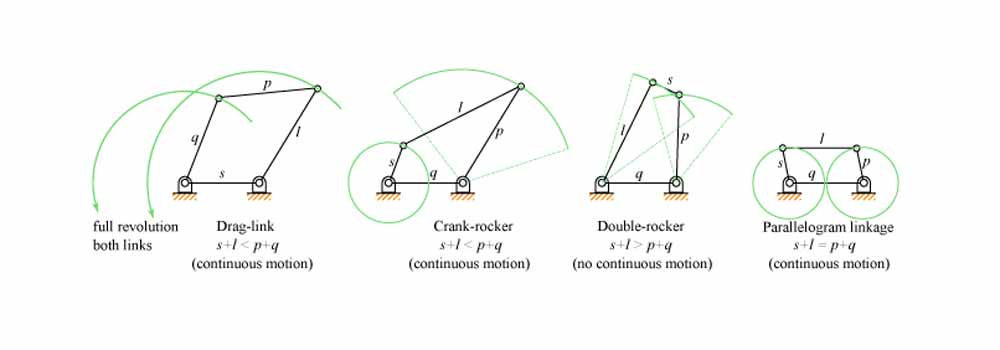
A Mechanical Engineer friend gave me some advice and shared this helpful website with me: Four-Bar Linkage and Coupler Curve - here I can input different arguments to simulate the paths of the bars. And I tried out 2 different versions, and decided to go with version 2.
- Crank = 20 mm
- Coupler = 180 mm
- Rocker = 40 mm
- Frame (stand surface) = 150 mm
Flipping Mechanism
I designed the flipping arms on Corel Draw and lasercut onto acrylic. As each arm needs to be on a separate plane, I 3D printed some rings to fit the screws through to create the different planes the arms need so that they do not cross one another's path. I have designed the rotary disc to fit a M3 screw so that I can tighten the disc to the shaft of the stepper motor.
 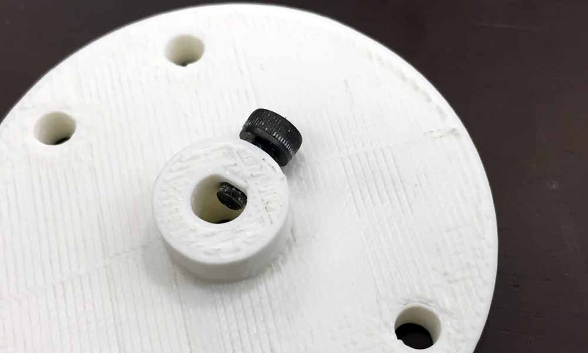
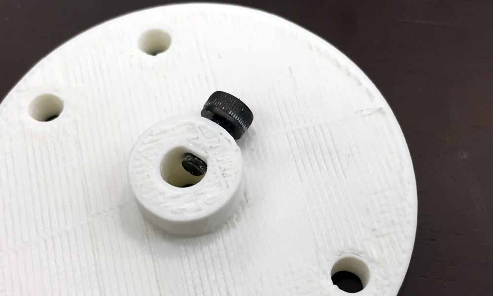
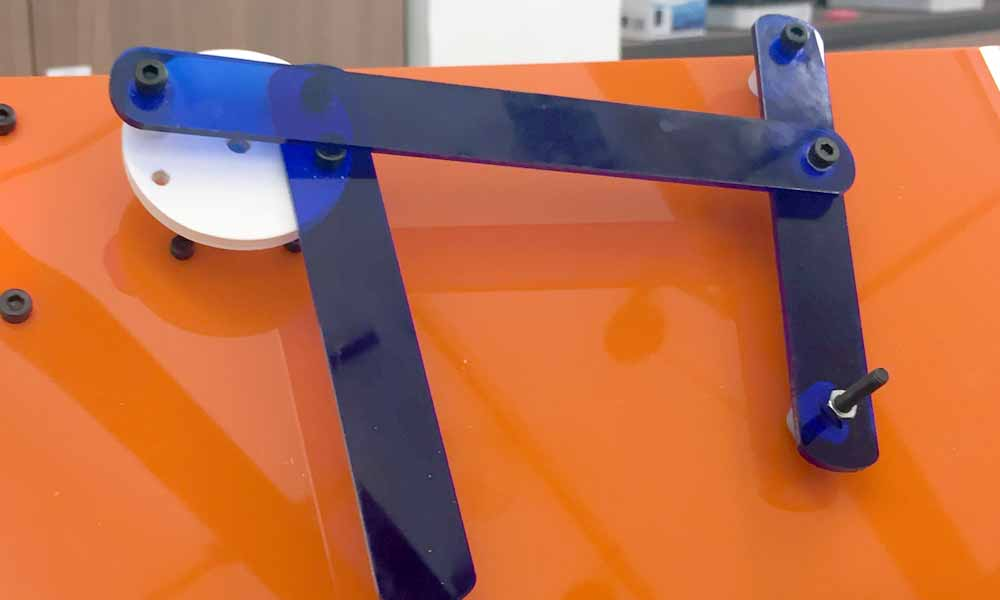 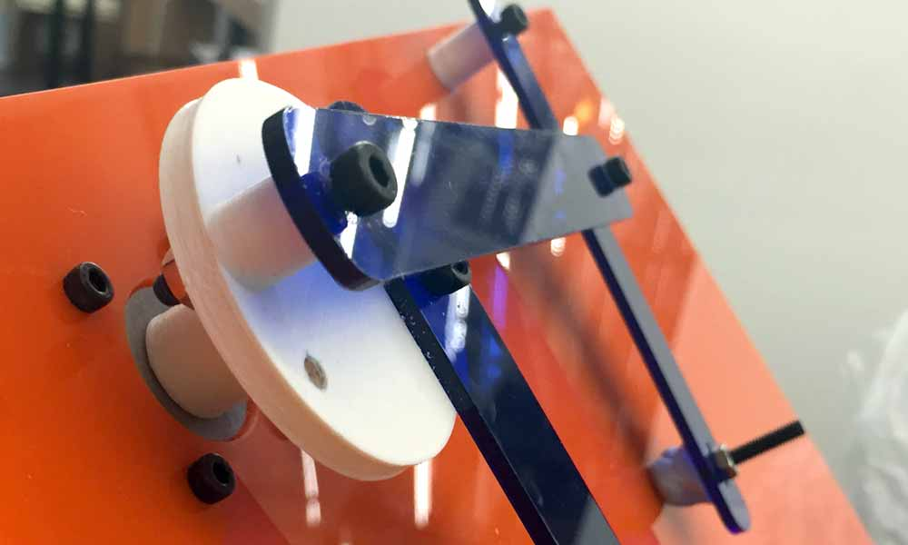
End effector
I was having some difficulty with the end effector. I discovered something new to me called Static and Kinetic Friction. The level of friction that different materials exhibit is measured by the coefficient of friction. The formula is µ = f / N, where µ is the coefficient of friction, f is the amount of force that resists motion, and N is the normal force. Normal force is the force at which one surface is being pushed into another. If a rock that weighs 50 newtons is lying on the ground, then the normal force is that 50 newtons of force. The higher µ is, the more force resists motion if two objects are sliding past each other. If you try to slide two objects past each other, a small amount of force will result in no motion because the force of friction is greater than the applied force. This is static friction. If you apply a little more force, the object "breaks free" and slides, although you still need to apply force to keep the object sliding. This is kinetic friction. You do not need to apply quite as much force to keep the object sliding as you needed to originally break free of static friction.
I have tried to 3d print the end effector but because it was too tiny, the end result was not ideal. After trying a few different designs, I have decided to use a M4 screw and nut to do the job. Then I kneaded a blue tac into a ball and stick to the head of the screw, that is touching the paper. In order to create a forward stoke of the blue tac to lift the page off the book the applied force must be greater than the force of friction. So it seems that my end effector does not have enough force to apply a motion to the page. Another problem I faced was the arm connecting the end effector is not heavy enough to keep the blue tac to the paper to lift the page off the book. I tried adding dead weight to the screw to make it heavier but that has caused the stepper motor to become sluggish.
After the final presentation on 22 June, besides touching up the documentation, I have also sought to improve the end effector. I applied UHU patafix at the arm touching the page as it seems more effective than Blu tack. I applied the extra Blu tack on top of the screw to act as "dead weight" so that it might be able to lift up the page. However, when the second arm at the crank tries to sweep the page across the book, the weight was detrimental and causing the wiping arm to get stuck. I have make trying many methods to test the flipping mechanism but unsuccessful in finding a right balance in the arm. I even made a DIY spring by coiling a wire into a hand drill. It helped a little to keep the arm light. I think what I need is the arm to be heavy in the first half of the flipping and to somehow become light at the second half so that it does not get stuck to the page.
Stand Surface
My initial idea was to fabricate a music stand using CNC machining. However, I have considered the purpose of the score turner and being lightweight is an important factor for this to be workable. Therefore, instead of fabricating a stand, I have borrowed a stand from my friend who is a musician to make a stand surface. I designed the stand surface using Corel draw. The stand is a 50cm x 40cm acrylic with some holes to mount the stepper motor, flipping geometry and circuitry housing. Version 1 has the frame of the flipping mechanism about 5mm away from the right edge. It turned out that this is a poor design as the end of the arm reached beyond the edge of the stand, sinking lower than the slanted stand, making it unable to return to to stand surface. I only discovered this problem after mounting the flipping device and motor to the stand and test the mechanism. Right away, I amended my design to version 2 and lasercut the stand again. The holes fit M3 screws and nuts after a little filing.
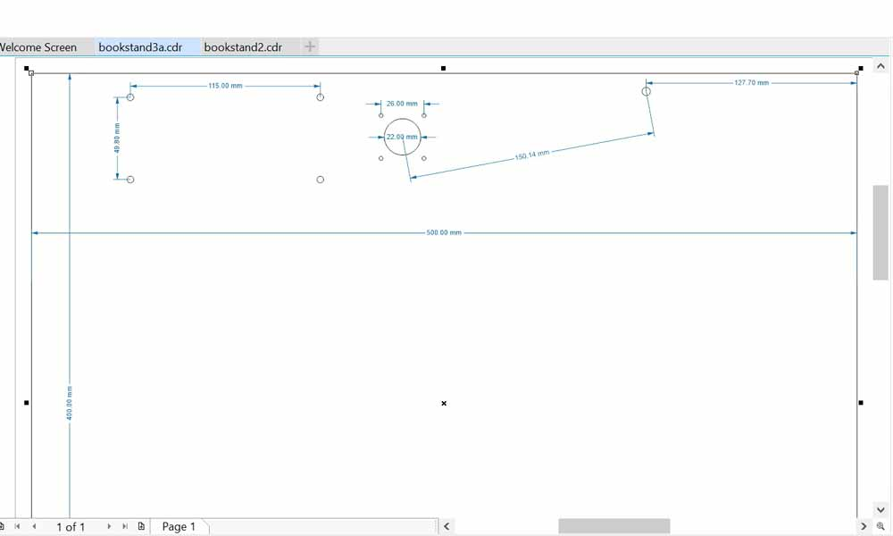
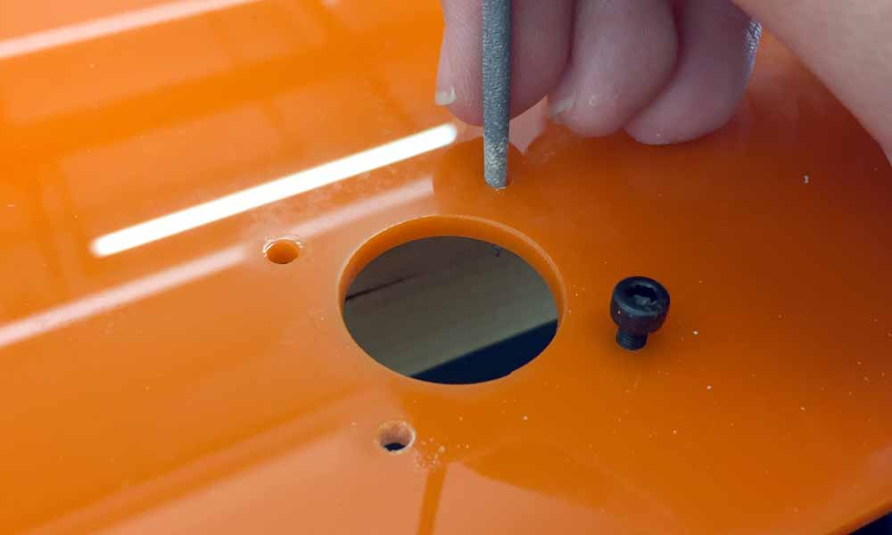 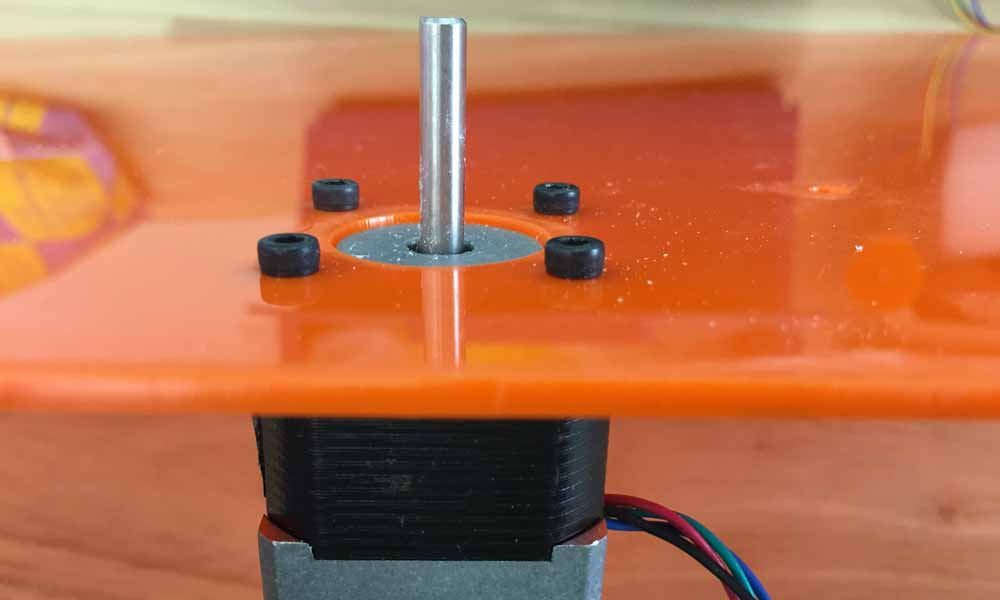 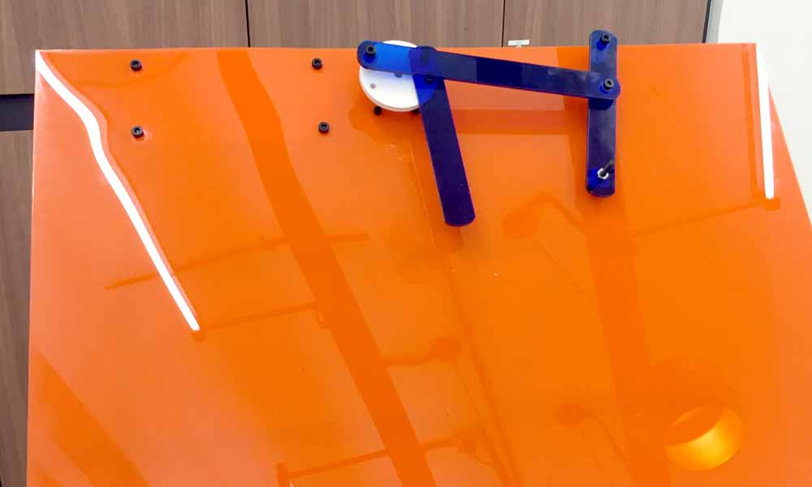 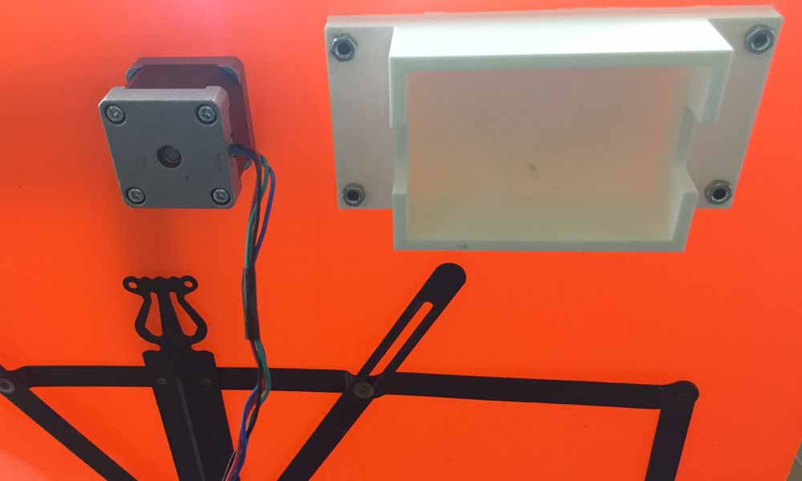
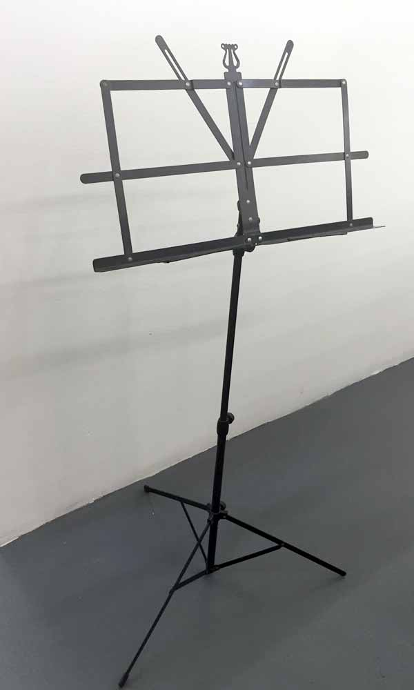 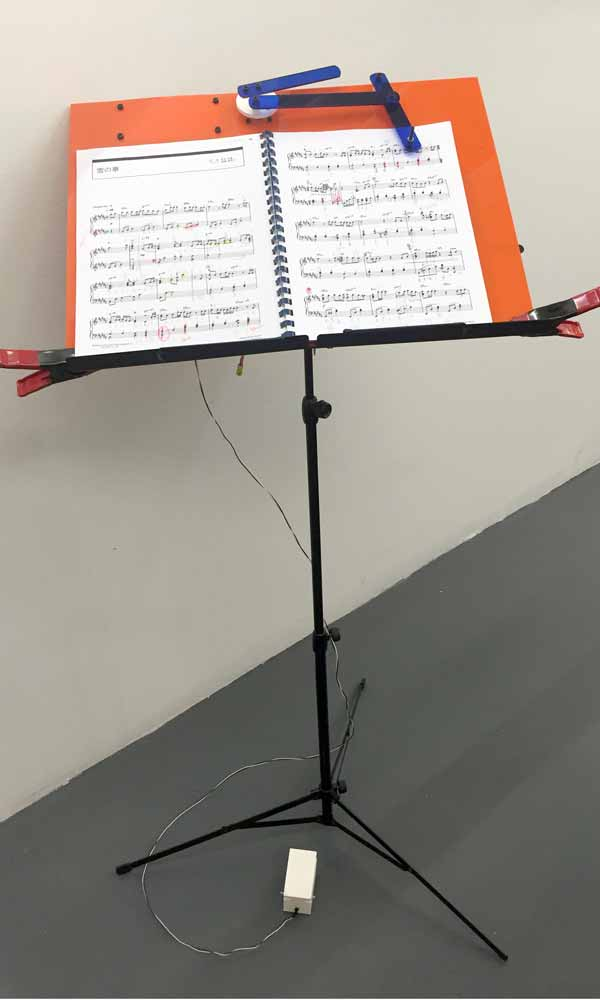 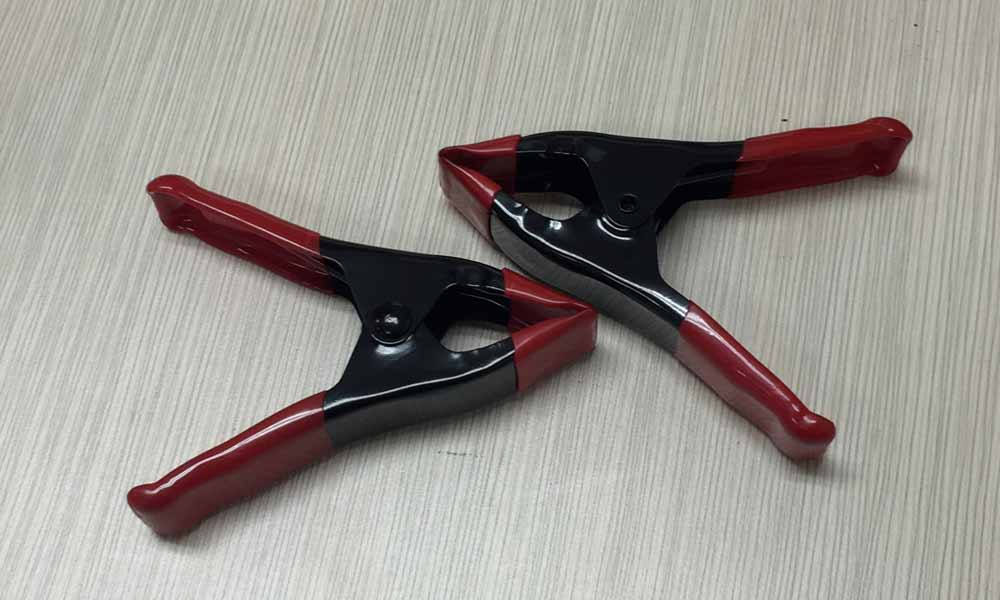
Circuitry Housing
I made a housing for the circuitry to hide the unsightly wires using the newly acquired Cubicon 210. This user-friendly 3D printer is a huge improvement over the existing ultimakers. However I was surprised that the base at one of the edges was warped. It could be because the container was too long (125mm x 60mm). The cover was a tight fit and was able to close well after a little filing.
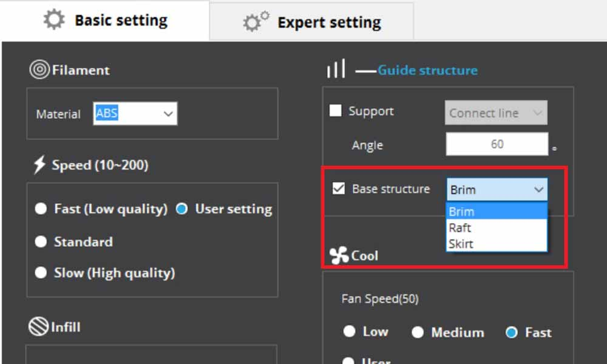 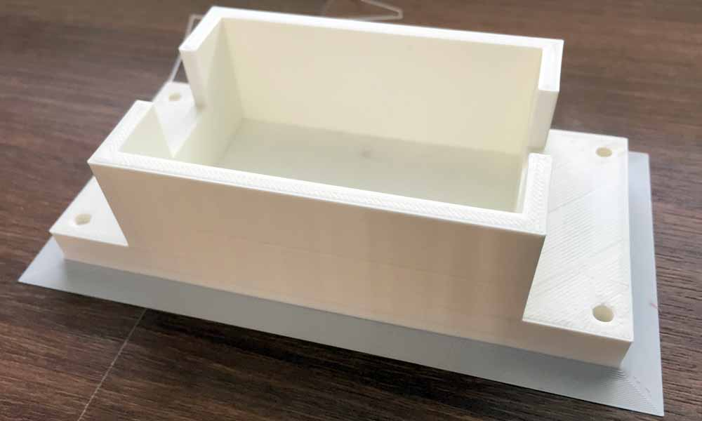 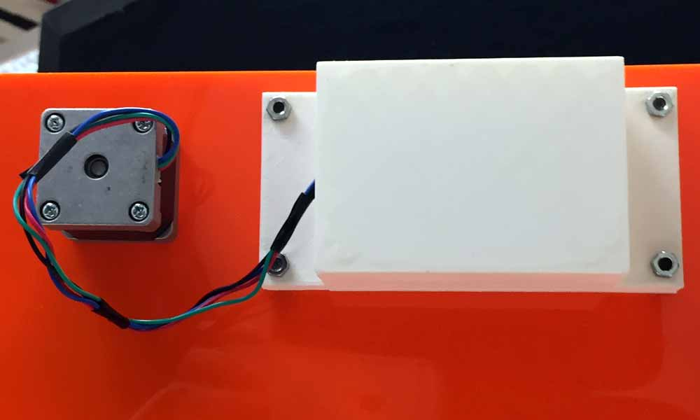
Foot switch Housing
Thingiverse user claudiorfernandes made a Emergency stop punch button and that was a perfect housing for my foot switch, so I used it just as it is. I have used a 2m wire to connect the snap action switch to the PCB. The VCC cable is soldered to the COM terminal, while the GND cable goes to SPST-NO (normally open) terminal.
Download work files
References
- Switch Basics
- BYJ48 Stepper Motor
- How to use a Stepper Motor
- Small Reduction Stepper Motor - 5VDC 32-Step 1/16 Gearing
- Small Reduction Stepper Motor - 12VDC 32-Step 1/16 Gearing
- Unipolar Stepper Motor vs Bipolar Stepper Motors
- Fuzz Pedal
- Overdrive Pedal
- Stepper Motors
- 28BYJ-48 Stepper Motor with ULN2003 driver and Arduino Uno
- Decoupling capacitor
- Stepper Motor Mounts
- Nema 14 Bipolar Stepper 5.4V 0.8A 18Ncm(25.5oz.in) 14HS13-0804S
- 4 Bar Linkage Kinematics
- Four-Bar Linkage and Coupler Curve
- How to Make a Folding Book Stand
- STEP MOTOR BASICS GUIDE
- Bipolar stepper motor control with Arduino and an H-Bridge
- Bipolar Stepper Motor Control with an Arduino and H-Bridge
- Bipolar Stepper Motor
- Feeding power to Arduino: the ultimate guide
- 28BYJ-48 Stepper Motor with ULN2003 driver and Arduino Uno
- Microcontrollers - AVR Atmega32 - Adding a Button to the Microcontroller
- Microcontroller - A Beginners Guide - Adding a Button to the Microcontroller and Making it Do Something
- Programming an ATtiny w/ Arduino 1.6
- Beyond the Arduino: Programming AVR Microcontrollers in C
- Make: AVR Programming: Learning to Write Software for Hardware by Elliot Williams.
- Professional Hand Soldering Basic to Advance Surface Mount, Through Hole, Wires & Terminals
- Soldering Basics - Popular Solder Connections
- NewbieHack.com - LEARN THE FUNDAMENTALS OF MECHATRONICS!
- NewbieHack - Microcontroller Tutorial - A Beginners Guide
- Static and Kinetic Friction
- end effector
- Torque